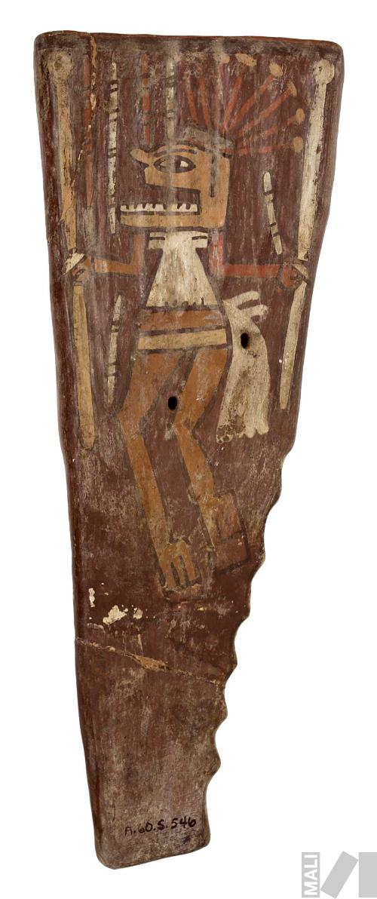

Music — Soul — Sound
Long before cities rose on its slopes, the Andes already had music. Wind instruments carved from condor bone. Skin drums echoing in stone temples. A sound world unchanged for three thousand years.
"The music of the Andes is the sound of the landscape itself — thin air, wind, distance, and the memory of the earth." — Ethnomusicologist, University of Lima

The instruments
Andean music is built from wind and string and skin. Each instrument carries a geography — the wind instruments from the high plains, the strings from the valleys, the drums from everywhere.
The Andes heard around the world
Andean music is the only indigenous musical tradition in the Americas to have become a global phenomenon without being commercialized into something unrecognizable. The sounds survived.
By region
The Andes is not one musical culture. Each altitude, each valley, each civilization left its own sound. From the Caribbean-influenced Pacific coast to the deep Amazonian slopes, the music changes with the landscape.
Why the music survived
The Spanish banned Andean instruments in the 16th century. They melted Inca metalwork, burned codices, renamed mountains. But they could not silence a flute made of bone that could be hidden in a pocket.
Andean music survived by absorbing what came at it. The charango made the Spanish guitar Andean. The cumbia absorbed African drums. The pasillo made the waltz its own. Each conquest created a new hybrid — and the mountain sound persisted at the core.
Today, Andean music fills festival grounds, radio stations, and concert halls from La Paz to New York. The quena player at the subway entrance and the UNESCO ceremony are the same tradition, separated only by an amplifier.
"When I play the quena, I am not playing a flute. I am opening a channel between the world of the living and the world of the mountains. The music was always there. I am just letting it through." — Eloy Machicado, Bolivian quena master